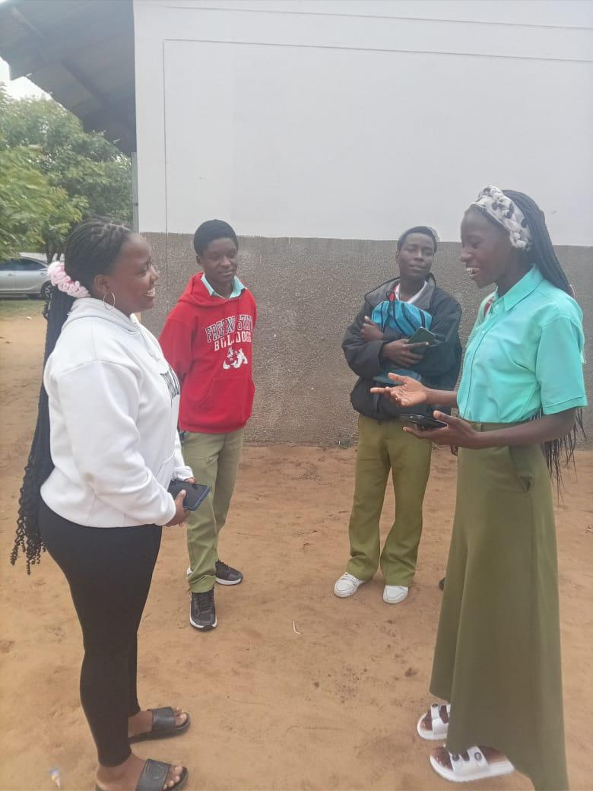
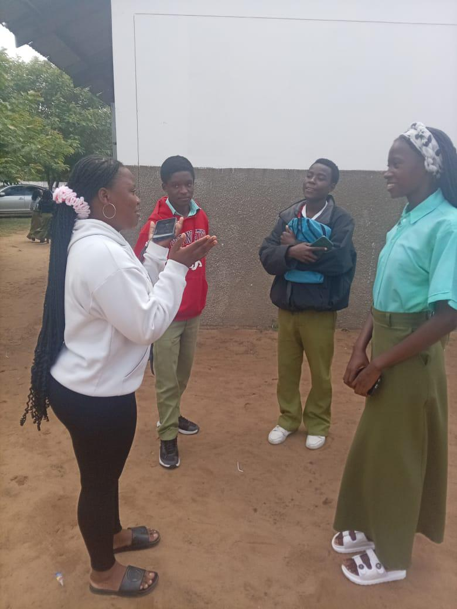
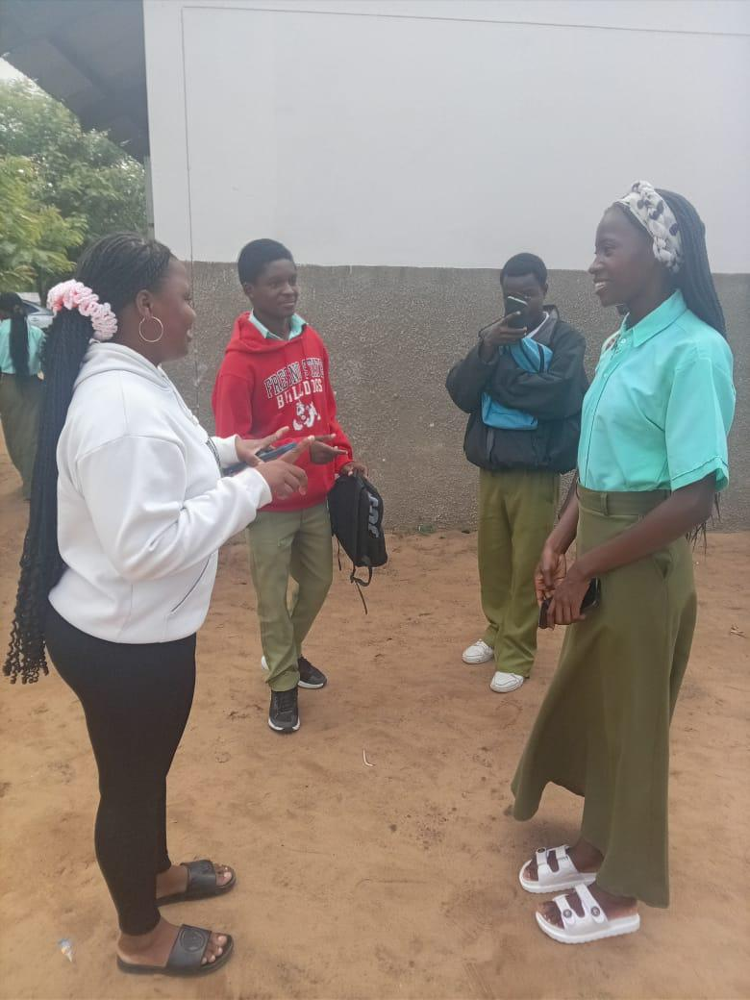

Momentos de diálogo e sensibilização
Imagens captadas durante conversas e actividades de sensibilização com alunos.

Diálogo aberto sobre respeito e limites

Participação activa dos estudantes

Espaço seguro para ouvir e ser ouvido

Sensibilização no ambiente escolar